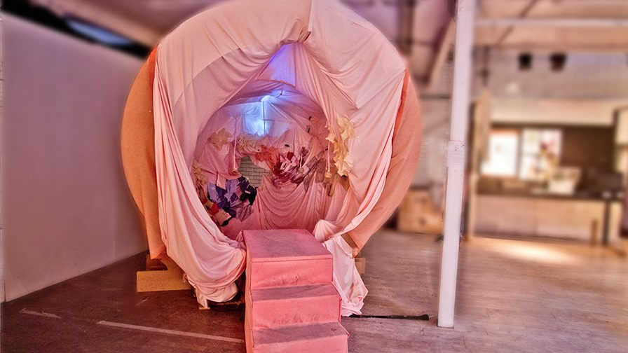
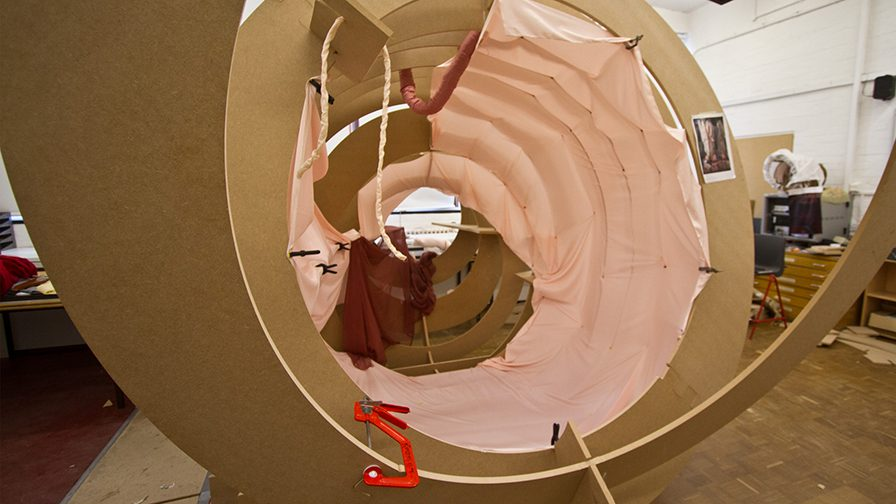
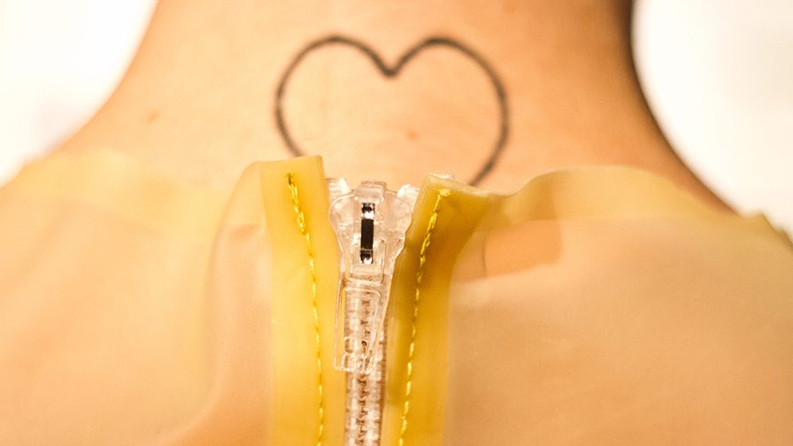
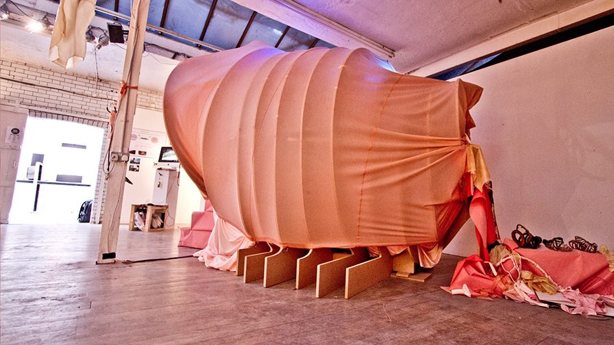
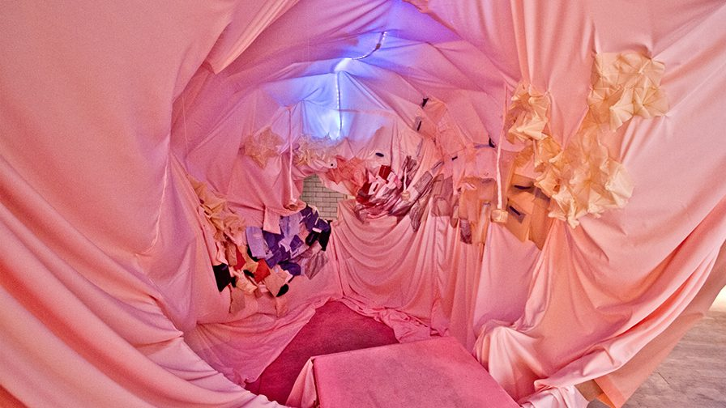
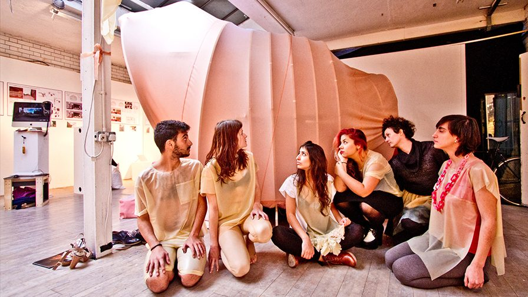
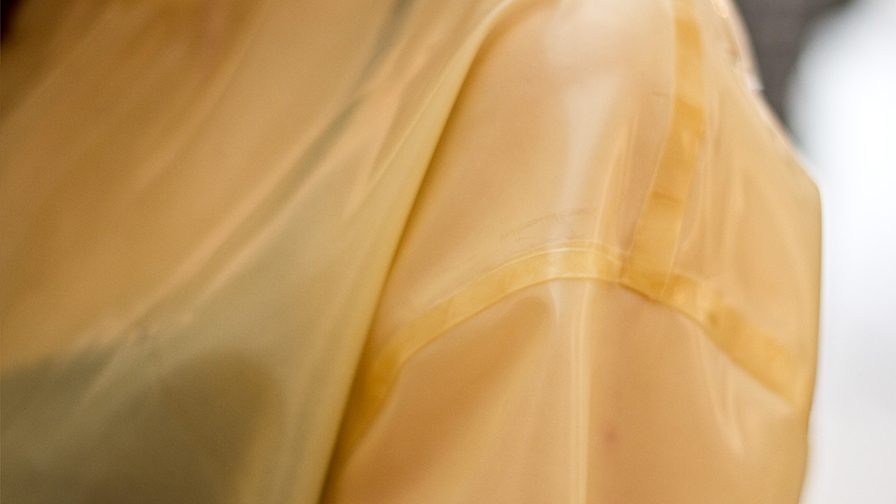
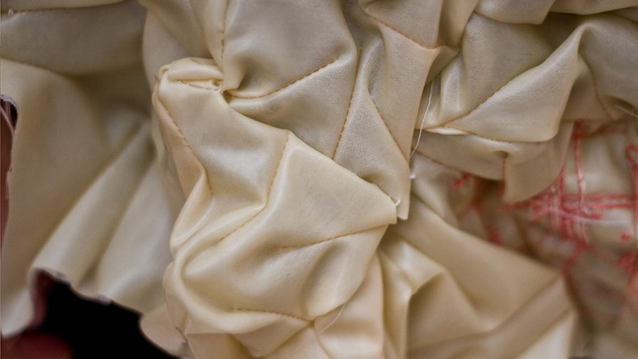
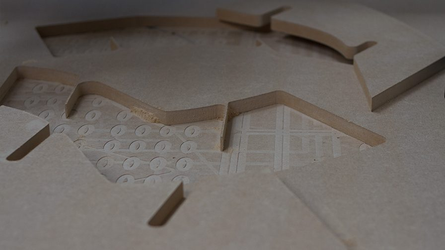
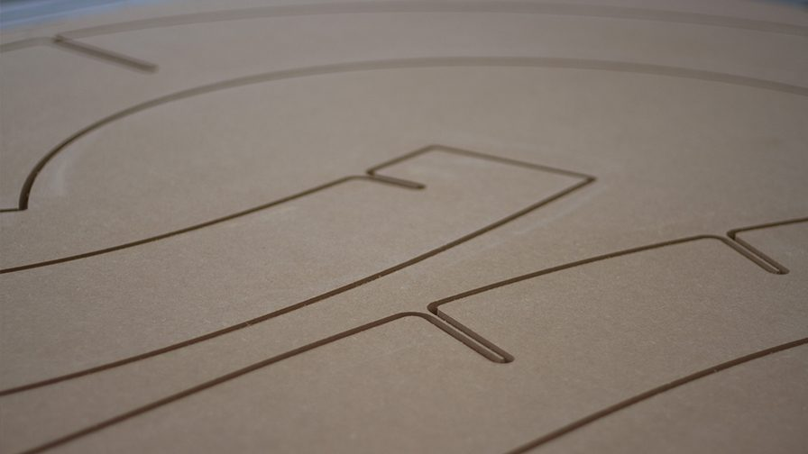
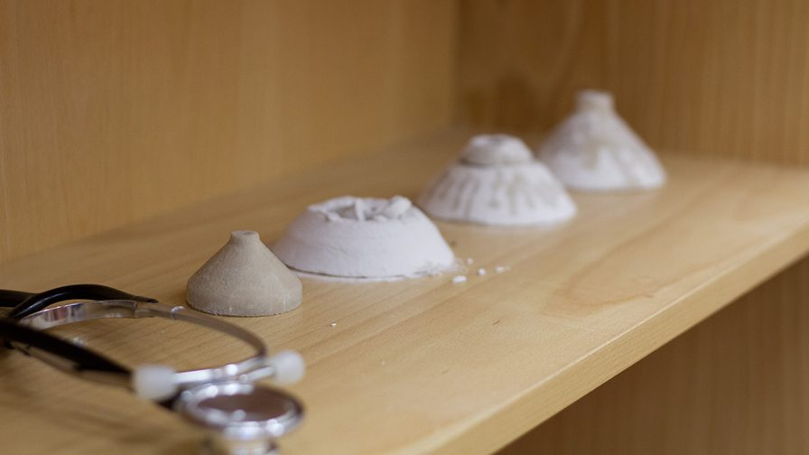
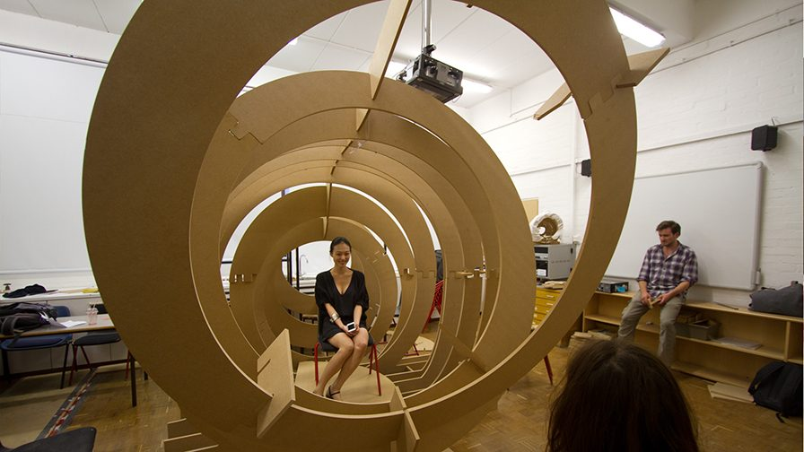
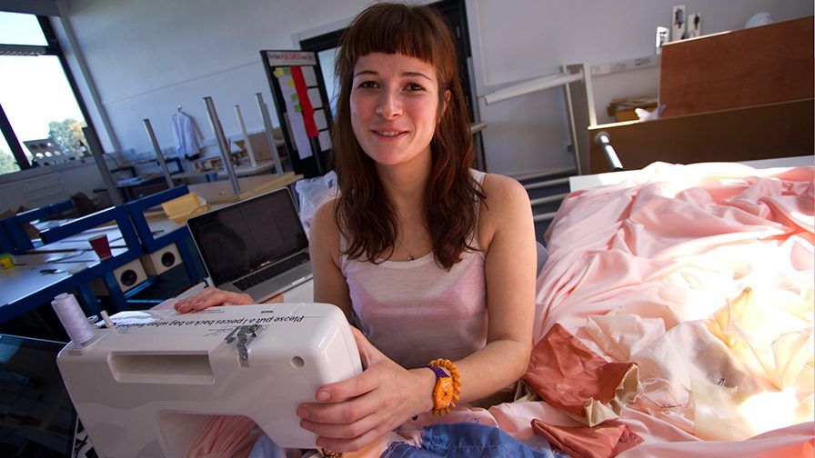
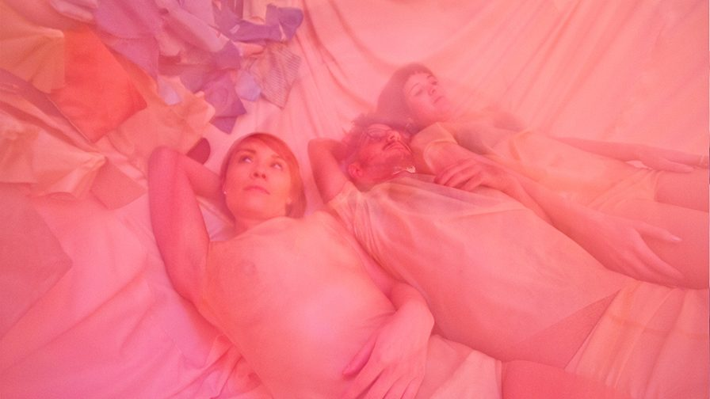
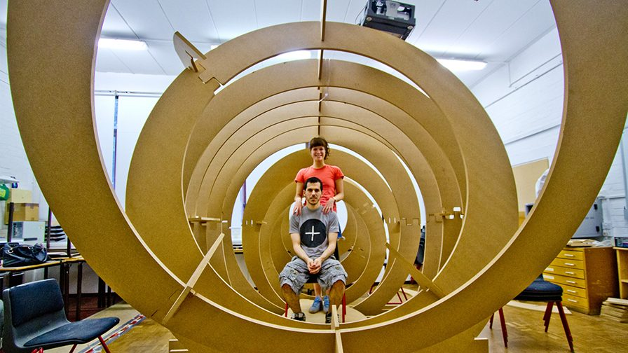
Organ alpha is a joint project with Marion Lean, a Scotish textile designer. The installation was done for the final project of our MA Design Critical Practice at Goldsmiths University of London.
Organ Alpha suggest new modes of determining the human state and exploring the body. Investigating the body’s phenomena through rhythm and sound and by linking emotional feeling to physical article, the collaboration provides modes of demonstrating and understanding body function - somatic and emotional – by way of hearing and touching.
In their exploration of the body, Mavion (Marion and Avi) have created a physical depiction of places we have never before been able to reach and experiences we could never before behold. The installation is a wondrous exemplar for future investigations of untouchable phenomena. Speculative, probing and potentially scary, Mavion invoke an atavistic moral obligation to explore the unseen. In challenging aspects of perception and the subjective, the installation allows us to experience the self in an unexpected, stimulating, and extraordinary way. Using specially designed sensory stethoscopes, visitors will be able to hear the body’s sounds as depicted by a range of participants throughout the course of research. The installation associates changes of state (such as from hungry to full) to changes in shape, form, feel, pitch and tone. Using non-verbal sensory inputs, it questions our ability to express and understand the language of change.
Alpha version finished on September, 2012
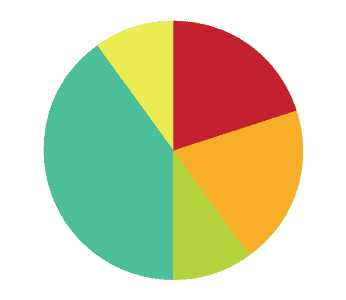
Soon Videos
{kind=link}
{kind=link}